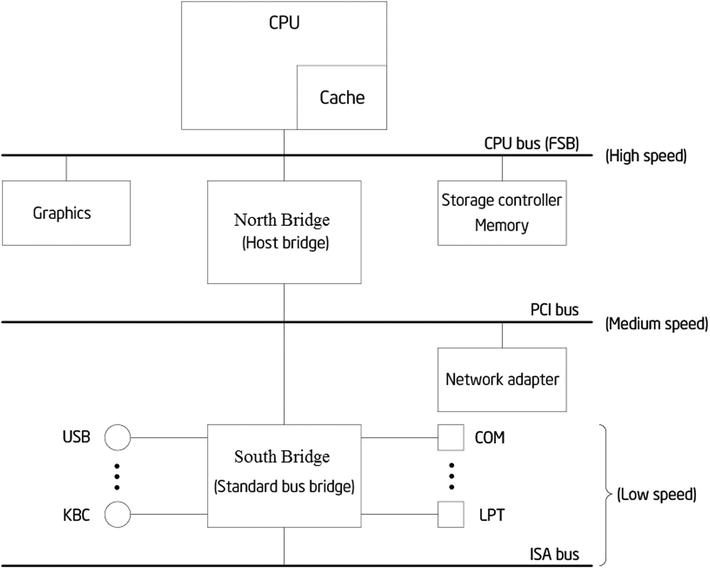

Application developers on general-purpose computers can often ignore the hardware and focus completely on their software because the two entities have become quite independent. However, developers cannot ignore embedded system hardware. Due to the embedded system’s specialized features, constrained resources, and integration of hardware and software, you need to understand the working principles and mechanisms of the hardware and hardware layers in order to design efficient applications for the embedded environment.
As the world’s leader in silicon innovation, Intel has been designing high-performance processors and related hardware for general-purpose computers and embedded systems. This chapter focuses on Intel technologies for embedded systems, paving the way for the subsequent application development.
Intel Atom Processor
Intel specifically designed Intel Atom processors for embedded and mobile devices starting in 2008. As the smallest and lowest-power processor, it uses an entirely new microarchitecture for embedded devices to reduce power consumption and yet maintain instruction-set compatibility with Intel Core 2 processors.
The Intel Atom processor is the current Intel-based architecture for embedded systems. It is compatible with Intel architecture instruction software. Compared to Intel processors for desktop systems, its size, power consumption, and other features are more suitable for embedded applications.
Today’s generation of Intel Atom processors delivers energy-efficient performance to power a range of computing devices. Thin and light smartphones and tablets. Intelligent cars. Innovative healthcare devices. Smart city infrastructure monitoring. High-performance microservers for the cloud. These are just some of the ways Intel Atom processor innovation drives higher performance at ultra-low power—connecting people, enriching lives, and fueling the Internet of Things.
The Intel Atom processor E3800 product family (formerly Bay Trail) offers a range of multi-core system-on-chip (SoC) options. Based on industry-leading 22 nm process technology, these SoCs integrate the Intel architecture core, graphics, memory, and I/O interfaces into a one-chip solution that delivers outstanding compute, graphics, and media performance.
Intel Atom Processor Architecture
Until the Intel Atom Clover Trail platform, the Intel Atom processor is based on a microarchitecture code-named Saltwell that applies the two-issue wide and in-order pipeline; it also supports Intel Hyper-Threading Technology. The microarchitecture is shown in Figure 2-1.
Figure 2-1.
Intel Atom architecture
The front-end area is an optimized pipeline, including
- 32 KB, 8-way set-associative, L1 Cache
- Branch-prediction unit and instant translation look-aside buffer (ITLB)
- Two instruction decoders, each of which decodes two instructions at most per cycle
In each cycle, the front end may transmit two instructions at most to the instruction queue for scheduling. Also in each cycle, the scheduler may transmit two instructions at most to the integer or SIMD/floating-point execution area through the two-way port. (Single instruction, multiple data [SIMD]) is introduced in the next section.)
The ports for the integer or SIMD/floating-point areas have the following binding features:
Integer execution area
1.
Port 0: Arithmetic logic unit 0 (ALU0), shift/rotate unit, and load/store unit.
2.
Port 1: Arithmetic logic unit 1, bit-processing unit, jump unit, and LEA.
3.
Effective waiting time of “load-to-use” in cycle 0.
SIMD/floating-point execution area
4.
Port 0: SIMD arithmetic logic unit, shuffle unit, SIMD/floating-point multiplication unit, and division unit.
5.
Port 1: SIMD arithmetic logic unit and floating-point adder.
6.
In the SIMD/floating-point execution areas, the SIMD arithmetic logic unit and shuffling unit are 128 bits wide, but the 64-bit integer SIMD calculation is limited to port 0.
7.
The floating-point adder can perform Add packed single-precision (ADDPS)/ Subtract packed single-precision (SUBPS) in the 128-bit data path, whereas other floating-point addition operations are performed in the 64-bit data path.
8.
The security-instruction-recognition algorithm of floating-point/SIMD operations can directly execute new, shorter integer arithmetic instructions without waiting for old floating-point/SIMD instructions (which may cause some abnormality).
9.
The floating-point multiplication pipeline also supports the storage load.
10.
The floating-point addition instruction with load/store reference is distributed through two ports.
The instruction queue conducts the static partition in order to schedule the execution instructions from the two threads. The scheduler can select an instruction from two threads and assign them to port 0 or port 1 for the execution. The hardware selects the pre-fetch/decode/dispatch on the two threads and performs the next execution based on the readiness of each thread.
Silvermont: Next-Generation Microarchitecture
Intel’s Silvermont microarchitecture was designed and co-optimized with Intel’s 22 nm SoC process using 3D tri-gate transistors. By taking advantage of this industry-leading technology, Silvermont microarchitecture includes
- A new out-of-order execution engine that enables best-in-class, single-threaded performance.
- A new multi-core and system fabric architecture scalable up to eight cores and enabling greater performance for higher bandwidth, lower latency, and more efficient out-of-order support for a more balanced and responsive system.
- New Intel architecture instructions and technologies bringing enhanced performance, virtualization, and security management capabilities to support a wide range of products. These instructions build on Intel’s existing support for 64-bit and the breadth of the Intel architecture software installed base.
- Enhanced power-management capabilities including a new intelligent burst technology, low-power C states, and a wider dynamic range of operation taking advantage of Intel’s 3D transistors. Intel Burst Technology 2.0 support for single- and multi-core offers great responsiveness scaled for power efficiency.
The microarchitecture is shown in Figure 2-2.
Figure 2-2.
Silvermont microarchitecture
Silvermont provides the following benefits and features:
- High performance without sacrificing power efficiency: Out-of-order execution pipeline, macro-operation execution pipeline with improved instruction latencies and throughput, and smart pipeline resource management
- Power and performance: Efficient branch processing, accurate branch predictors, and fast-recover pipeline
- Faster and more efficient access to memory: Low latency, high-bandwidth caches, out-of-order memory transactions, and multiple advanced hardware prefetchers, balanced-core, and memory subsystems
Features of the Intel Atom Processor
Intel Atom processors have features for mobile Internet device (MID), netbook, nettop, and embedded systems, as outlined in this section.
Small Form Factor
The latest Intel Atom processor Z3740 (code name Bay Trail) has a package size of only 17 mm × 17 mm and is a multi-core SoC that integrates the next generation Intel processor core, graphics, memory, and I/O interfaces into one solution. It is also Intel’s first SoC that is based on the 22 nm processor technology (see Figure 2-3).
Figure 2-3.
Intel Atom processor Z3xxx Series
Low Power Consumption
As mentioned earlier, embedded systems are power constrained. The Intel Atom processor features energy-saving technologies such as Enhanced Intel SpeedStep Technology (EIST),1 low thermal design power, dynamic cache sizing, and deeper sleep. Devices with Intel Atom processors feature very limited heat dissipation, much less than common “full power” devices.
It should be noted that different Intel Atom processor series have different low-power processing strategies. For example, the N series does not support EIST, nor does it conduct automatic frequency reduction in standby state.
Dynamic Low-Voltage Technology for Mobile and Embedded Devices
Many mobile and embedded systems are powered by battery; so the voltage doesn’t have the stability of systems with AC power supplies, for which the voltage maintains a certain range. Intel Atom processors also have adopted the technology to dynamically adjust operating voltage per processor activity states and support the Intel Mobile Voltage Positioning (IMVP)-6 standard for mobile and embedded systems.
High Performance
The Intel Atom processor is an embedded microprocessor, delivers the performance of traditional general-purpose processors, and provides a performance similar to Intel Pentium 4 processors. The high performance is mainly reflected in the following aspects:
- Quad core supports four-core / four-thread out-of-order processing and 2 MB of L2 cache, which makes the device run faster and more responsively by allowing multiple apps and services to run at the same time.
- Intel Burst Technology 2.0 lets the system tap extra cores when necessary, which allows CPU-intensive applications to run faster and more smoothly
- Performance improved by using the 22 nm processor technology:
- Maximizes current flow during ON state for better performance
- Minimizes leaks during OFF state, leading to more energy efficiency
- 64-bit OS capable
- Supports dynamic power sharing between the CPU and IP (graphics), allowing for higher peak frequencies
- Total SoC energy budget is dynamically assigned according to application needs
- Supports fine-grained low-power states, which provides better power management and leads to longer battery life
- Supports cache retention during deep sleep states, leading to lower idle power and shorter wakeup times
- Offers more than 10 hours of active battery life
SSE3 Instruction Set Enhances the Processing Power of Digital Media
Software applications like CAD tools, 3D/2D modeling, video editing, digital music, digital photography, and games all require massive floating-point parallel computing. They are called floating-point-intensive applications. For example, video processing often requires multiplication of two data sets of n length, so the common arithmetic instruction has to operate n times (n cycle). To that end, the SIMD architecture was created. Compared with traditional processors, SIMD processors have more arithmetic units, which are controlled by a controller, while conducting the same data operation in each data set (also known as vector data) to achieve spatial parallelism. In the example shown in Figure 2-4, if the CPU uses the eight processing elements, the n/8 SIMD instructions can complete the calculation so the operation time is shortened to 1/8 of the original time, and the speed is increased 8 times. The essence of SIMD is to transfer from one data process to a data set process.
Figure 2-4.
Realization procedure of SIMD instructions
Streaming SIMD Extensions (SSE) in Intel processors accelerate the streaming floating-point calculations and greatly improve the performance in floating-point-intensive applications. Intel Atom processors support SSE3 and SSSE3 (Supplemental Streaming SIMD Extension 3; Supplement SSE 3). The version history of the SSE instruction set is shown in Table 2-1.
Table 2-1.
Development History of the SSE Instruction Set
Version | SSE | SSE2 | SSE3 | SSSE3 | SSE4 | AVX |
Date | 1999 | 2000 | 2004 | 2006 | 2007 | 2008 |
Instructions | 70 | 144 | 13 | 32 | 47 | 256 |
Enhancement | Single-precision vector • Flow operation | Dual-precision vector • 128-bit vector integer | Complex arithmetic | Decoding | Video acceleration • Graphics module • Coprocessor acceleration | SSE extension float-point operations |
Intel Virtualization Technology (Intel VT)
Intel Atom processors support Intel VT, which is a kind of CPU virtualization technology. Intel VT allows one CPU to simulate the parallel operation of multiple CPUs, lets a platform run multiple operating systems, and enables applications to run independently in separate spaces, thereby increasing application efficiency.
Intel Hyper-Threading Technology (Intel HT Technology) and Multi-Core Technologies
The new Intel Z3xxx Atom processors support Intel HT Technology, which produces an overhead of less than 10% additional power consumption. Meanwhile, the N series adopted the dual-core architecture. Intel HT Technology and multi-core technologies enable processors to execute two instruction threads in parallel and provide thread-level concurrent applications to improve performance and system response in today’s multitasking environment. Intel HT Technology and multi-core technologies found in Intel Atom processors create higher execution efficiency than a single-thread microprocessor.
Other Technologies Used by the Intel Atom Processor
In addition, Intel Atom processors use a few other technologies that often go unnoticed but that increase processor performance:
- Smart cache: Intel Atom processors use the more intelligent, more efficient cache and bus technologies to effectively support data sharing and provide enhanced performance, response, and energy-saving capability.
- Power-optimized FSB: Intel Atom processors support up to 1910 MHz frequency (E3845) to meet the needs of demanding applications. In addition, the Intel architecture instruction (macro-ops) fusion technology allows faster execution of instructions in the low-power state.
- Enhanced data pre-fetch technology: This technology can effectively predict which data will specifically be used and automatically load it into the L2 cache in advance.
- Burst mode: Burst mode, as enhanced hardware technology, is used in Intel Atom processors after the Z5xx series. It automatically sets the processor performance level based on system load without compromising the thermal design so that the user can select processor performance on demand.
- Low cost: To meet the needs of embedded systems, Intel Atom processors use low-cost design strategies, one of which is applying the in-order execution of Intel architecture. Compared with the out-of-order execution of general desktop processors, the in-order execution design in Intel Atom processors can reduce the number of transistors and manufacturing costs, but results in lower performance. To compensate for the lower performance involved, Intel Atom processors use the higher operating frequency.
In addition to these features, Intel Atom processors have some unique benefits compared to other embedded processors. Because they are based on Intel architecture, Intel Atom processors have a huge number of compatible Intel architecture-based software applications. Many of these applications can be easily and seamlessly migrated to Intel Atom processor-based devices.
In general, low-power consumption, small size, low cost, low thermal coefficient, and high performance enable Intel Atom processors to be more suitable for embedded system applications. Due to the low-power, lead-free, halogen-free manufacturing process, Intel Atom processors are also very eco-friendly.
Intel Embedded Chipset
A chipset, one of the core components of computer motherboards, maximizes the integration of complex circuits and components within a few chips. The chipset determines the functions, level, and grade of the motherboard. If it fails to work correctly with the CPU, the chipset seriously affects overall performance and can even cause hardware failure. If the CPU or microprocessor is the brain, the chipset is the nervous system of the device.
A typical example of a computer system structure is shown in Figure 2-5. The CPU is connected to the main memory RAM, graphics, and other components through FSB, which has high frequency. The network adapter and other components are connected to a medium-speed bus (PCI bus with much lower frequency than FSB). North Bridge (the host bridge chip) realizes the connection of high-speed FSB and the medium-speed bus. Low-speed devices, such as COM, LPT, and USB, as well as the lower-speed ISA bus, are connected to the low-speed bus through South Bridge (the standard bus bridge chip).

Figure 2-5.
Example of computer system architecture
Variations on this architecture include, for example, computers with no ISA bus. North Bridge and South Bridge are integrated in some Intel Atom series of processors, as specified in subsequent sections. The system architecture in Figure 2-5 can help you understand the main components of the chipset and their functions.
Tip
PCI and ISA The two types of PC bus standards are PCI and ISA. Peripheral Component Interconnect (PCI) is the standard for the local bus and was launched by Intel in 1992. PCI buses are either 32-bit or 64-bit, and 33 MHz or 66 MHz in speed. A 32-bit, 33 MHz PCI bus has a bandwidth of 32/8 × 33 MHz = 132 MB/s. Industry Standard Architecture (ISA) is based on the IBM PC bus and is the bus standard developed in the early 1980s. The bus has a width of 8/16 bits and an operating frequency of 8 MHz, which are far below PCI. Most new computers do not support the ISA bus.
The main chips in the chipset and their functions are as follows:
- North Bridge chip: Determines the type of CPU, clock speed, bus frequency of the motherboard system, type of memory, maximum capacity, performance, graphics slot specifications (ISA/PCI/AGP slot), ECC error correction support, and so on. North Bridge plays a leading role in the chipset, so it is also known as the host bridge.
- South Bridge chip: The South Bridge chip provides the support for the keyboard controller (KBC), real-time clock controller (RTC), Universal Serial Bus (USB), Ultra DMA/33 (66) EIDE data transmission mode, advanced energy management (ACPI), and so on. It determines the type and quantity of expansion slots and expansion interface (such as USB2.0/1.1, IEEE1394, serial port, parallel port, and VGA output interface of a notebook). South Bridge is also known as the standard bus bridge.
- Other chips: Some chipsets combine a 3D acceleration display (integrated graphics chip), AC’97 audio decoding, and other functions, and determine the display performance and audio playback performance of the computer system.
The latest Intel Atom processor includes a seventh-generation Intel GPU with burst technology to provide an improved graphics and media experience. The new processor supports high-resolution displays up to 2,560 × 1,600 at 60 Hz and supports Intel Wireless (Intel WiDi) technology through Miracast. Seamless video playback is supported by high-performance, low-power hardware acceleration of media encode and decode.
Intel System on Chip (SoC)
Unlike desktop devices, the processor, chipset, graphics, motherboard, and other components cannot be independently manufactured, configured, and then assembled in embedded systems due to constraints of volume and space; otherwise, they would be too large, consume too much power, have impractically complex designs, and have unstable layouts similar to desktops. Therefore, most current embedded systems adopt SoC designs. By integrating peripheral function modules of microprocessor/microcontroller, memory, bus, frequency generator, and A/D or D/A conversion on a single chip, SoC provides the benefits of small size, energy efficiency, high reliability, and simple peripheral circuit design. Intel has gradually embarked on SoC as the development direction for Intel Atom processors. A description of the recent designs follows.
Medfield
Medfield, released in 2012, is Intel’s first SoC processor for smartphones. The core of the Medfield platform is the SoC chip (code-named Penwell). In fact, the previous Moorestown platform requires a two-chip solution to achieve the same functionality. As a true SoC, Medfield is different from the single-chip layout of Intel Atom processors but is equivalent to previous chipsets. As a result, it becomes a more compact, energy-efficient processor. The Medfield SoC processor adopts package on package (POP), and the entire chip area is about 12 × 12 mm. The internal architecture of Medfield SoC is shown in Figure 2-6.
Figure 2-6.
Internal architecture of Penwell SoC
The first Medfield SoC, built for smartphones, has an Intel Atom processor Z2460. The plan is to use the latest Intel Atom processors in future Medfield SoCs. For example, the plan for the second Medfield SoC is to adopt the Intel Atom processor Z2610 and has applications for mainstream tablets. Medfield SoC uses a 32 nm processor; integrates a single-core Intel Atom processor, 512 KB L2 cache, PowerVR SGX540 GPU by Imagination Technologies, and dual-channel LPDDR2 memory controller; and supports 30 fps 1080p video decoding. The highest frequency of Intel Atom processors is limited to 1.6 GHz. The Z2460 may reduce the minimum frequency to 100 MHz, features 1.3 GHz standard operating frequency, and only operates in 1.6 GHz during acceleration mode. As the second Medfield SoC core, the Z2610 maintains operation at 1.6 GHz clock speed.
The Intel Atom processor Z2460 consumes 50 mW of power at 100 MHz clock speed (lowest frequency); 175 mW at 600 MHz clock speed; 500 mW at 1.3 GHz clock speed (standard frequency); and 750 mW at 1.6 GHz clock speed (highest frequency). Compared with desktop processors, the Z2460 has very low power consumption.
Today, the Android OS completely supports Medfield. Intel works with Google to develop software for compiling applications for ARM and Intel architectures.
Bay Trail
Bay Trail, the new Intel multi-core SoC built on the Silvermont architecture, is from Intel’s powerful processor family for mobile and desktop devices. Bay Trail is manufactured on Intel’s industry-leading tri-gate 22 nm process technology.
Bay Trail is a multi-core SoC that integrates the next-generation Intel processor core, graphics, memory, and I/O interfaces into one solution. It is also Intel’s first SoC that is based on the 22 nm processor technology. This multi-core Intel Atom processor provides outstanding computing power and is more power efficient compared to its predecessors. In addition to the latest Intel architecture core technology, it provides extensive platform features such as graphics, connectivity, security, and sensors, which enable developers to create software with unlimited user experiences.
64-Bit Android OS on Intel Architecture
On a generic level, there are not many significant differences between 64-bit and 32-bit processors. But compute-intensive applications (later, the chapter discusses software workloads that run faster on 64-bit processors) can see significant improvements when moved from 32-bit to 64-bit. In almost all cases, 64-bit applications run faster in a 64-bit environment than 32-bit applications in a 64-bit environment, which is a good enough reason for developers to care about it. Utilizing platform capabilities can improve the speed of applications that perform a large number of computations.
64 Bits vs. 32-bit Android
A 64-bit architecture means the width of the integer registers and pointers is 64 bits. The three main advantages of a 64-bit operating system are as follows:
- Increased number of registers
- Extended address space
- Increased RAM
It’s not hard to imagine Android phones with 64-bit chips in the not-too-distant future. Because the Android kernel is based on a Linux kernel, and Linux has supported 64-bit technology for years, the only thing Android needs to fully support 64-bit processing is to make the Dalvik VM 64-bit compatible. A Dalvik application (written only in Java) will work without any changes on a 64-bit device because the bytecode is platform independent.
Native application developers can take full advantage of the capabilities offered by the underlying processor. For example, Intel Advanced Vector Extensions (Intel AVX) has been extended to support a 256-bit instruction size on 64-bit processors.
Memory and CPU Register Size
Memory is extremely slow compared to the CPU, and reading from and writing to memory can take a long time compared to how long it takes the CPU to process an instruction. CPUs try to hide this with layers of caches, but even the fastest layer of cache is slow compared to internal CPU registers. More registers means more data can be kept purely CPU-internal, reducing memory accesses and increasing performance.
Just how much difference this makes depends on the specific code in question, as well as how good the compiler is at optimizing the code to make the best use of available registers. When the Intel architecture moved from 32-bit to 64-bit, the number of registers doubled from 8 to 16, and this made for a substantial performance improvement.
Sixty-four-bit pointers allow applications to address larger RAM address spaces: typically, on a 32-bit processor, the addressable memory space available to a program is between 1 and 3 GB because only 4 GB is addressable. Even if 1–3 GB is available, a single program cannot use all the memory that is addressable unless it resorts to a technique like splitting the program into multiple processes, which takes a lot of programming effort. On a 64-bit operating system, this is of no concern because the addressable memory space is pretty large.
Memory-mapped files are becoming more difficult to implement on 32-bit architectures because files over 4 GB are increasingly common. Such large files cannot be memory-mapped easily to 32-bit architectures—only part of the file can be mapped into the address space at a time. To access such a file, the mapped parts must be swapped into and out of the address space as needed. This is a problem because memory mapping, if properly implemented by the OS, is one of the most efficient disk-to-memory methods.
Sixty-four-bit pointers also come with a substantial downside: most programs use more memory because pointers need to be stored and they consume twice as much memory. An identical program running on a 64-bit CPU takes more memory than on a 32-bit CPU. Because pointers are very common in programs, this can increase cache sizes and have an impact on performance.
Register count can strongly influence performance of an application. RAM is slow compared to on-CPU registers. CPU caches help to increase the speed of applications, but accessing cache does result in a performance hit.
The amount of the performance increase is dependent on how well the compiler can optimize for a 64-bit environment. Compute-intensive applications that are able to do the majority of their processing in a small amount of memory see significant performance increases because a large percentage of the application can be stored on the CPU registers.
Contrast this with an unoptimized application that might see a decrease in computer performance because 64-bit pointers require twice the bandwidth. However, in a mobile environment, the OS and installed applications should be engineered to avoid this. A famous example of a large program that runs slower on a 64-bit environment is the Oracle JVM.
Both ARM and Intel 64-bit CPUs have a 32-bit compatibility mode. Although 32-bit applications will run on 64-bit processors, compiling with a 64-bit optimizing compiler allows them to take advantage of the architectural benefits of a 64-bit environment.
Reference Platform for Intel Embedded Systems
The so-called reference platform for Intel embedded systems is a wide range of hardware devices that use the Intel Atom processor and SoC. This hardware combination features compact size, low power consumption, high performance, low cost, and an excellent chipset for graphics processing and other specialized sectors. Thus it can be widely used in diversified embedded devices such as netbooks, nettops, tablets, mobile phones, and MIDs.
Internet of Things (IoT) and Next Unit of Computing (NUC)
The Internet of Things (IoT) and Next Unit of Computing (NUC)are recent application sectors for Intel Mobile processors. The Intel NUC Kit DE3815TYKHE, shown in Figure 2-7, is built with an Intel Atom processor for intelligent systems and is a pint-sized unit for value-conscious businesses and organizations. This low-cost, low-power solution introduces many firsts to the Intel NUC form factor: a fanless thermal solution for the ultimate silence and reliability, onboard flash storage for small-footprint software solutions, internal flat-panel display connectivity for built-in screens, a video graphics array (VGA) port for monitor compatibility in legacy installations, a serial ports header for peripherals requiring the robustness of hardware handshaking, a watchdog timer for resilient system availability, and inter-integrated circuit (I2C) and pulse-width modulation (PWM) signals for interfacing with sensors and other embedded devices enabling the IoT. And with its three-year supply availability, the Intel NUC Kit DE3815TYKHE will be around to support long development and production ramp cycles.
Figure 2-7.
Intel NUC Kit DE3815TYKHE
With its vertical industrial design and support for Linux and Windows embedded operating systems, this Intel NUC was designed as the essential building block to power the thin-client market. A fanless kit with flash storage built in, USB3 support, and audio headset support, this Intel NUC fits right at home in schools, call centers, and other locations with a large installed base of VGA monitors.
Powered by the Intel Atom processor E3815, the Intel NUC Kit DE3815TYKHE also provides an ideal combination of power consumption, performance, affordability, and software compatibility to drive light digital signage, point-of-sale, and kiosk solutions, among other usages. With 4 GB of embedded MultiMediaCard (eMMC) storage built in, many embedded applications will benefit from a lower overall system-level BOM cost. The high-availability resilience can also be enabled for these and other unattended solutions via the built-in watchdog timer, providing protection against downtime. This Intel NUC provides a discrete Trusted Platform Module device onboard for hardware-based data encryption—a must-have for applications where confidential information is at stake.
Intel Galileo Development Kit for IoT
The Intel Galileo development board, shown in Figure 2-8, is Intel’s first product in a new family of Arduino-compatible development boards featuring Intel architecture. The platform is easy to use for new designers and for those looking to take designs to the next level.
Figure 2-8.
The Intel Galileo board
The Intel Galileo board is a microcontroller board based on the Intel Quark SoC X1000 application processor, a 32-bit Intel Pentium brand SoC. It is the first board based on Intel architecture designed to be hardware and software pin-compatible with shields designed for the Arduino Uno R3.
This platform provides the ease of Intel architecture development through support for the Microsoft Windows, Mac OS, and Linux host operating systems. It also brings the simplicity of the Arduino integrated development environment (IDE) software.
The Intel Galileo board is also software-compatible with the Arduino software development environment, which makes usability and introduction a snap. In addition to Arduino hardware and software compatibility, the Intel Galileo board has several PC industry standard I/O ports and features to expand native usage and capabilities beyond the Arduino shield ecosystem. A full-sized mini-PCI Express slot, a 100 Mb Ethernet port, a Micro-SD slot, an RS-232 serial port, a USB host port, a USB client port, and 8 MB NOR Flash come standard on the board.
The genuine Intel processor and surrounding native I/O capabilities of the SoC provides for a fully featured offering for both the maker community and students alike. It will also be useful to professional developers who are looking for a simple and cost effective development environment to the more complex Intel Atom processor and Intel Core processor-based designs.
Smartphones
As smartphones have become ubiquitous, customer demands for top-of-the-line devices have increased, with design and usability growing in importance.
Lenovo K900
The Lenovo K900, shown in Figure 2-9, is the first large-screen smartphone that is powered by the Intel Atom processor. The K900 is one of the first smartphones in the world to combine a 5.5-inch IPS display with 1,080-pixel full high-definition resolution performance at 400+ pixels per inch, all under the latest, touch-capacitive Gorilla Glass 2.
Figure 2-9.
Lenovo K900 smartphone
The Lenovo K900 runs on the Intel Atom Z2580 processor, a dual-core chip, which runs up to 2.0 GHz and utilizes Intel Hyper-Threading Technology to boost performance efficiency. The Intel-powered device also features an Intel Graphics Media Accelerator engine running a PowerVR SGX 544MP2 GPU. Lenovo has equipped the K900 with a large-aperture f1.8 lens, making it the first smartphone to offer such a wide aperture on its camera. Combined with its other specifications, the K900 is now a legitimate stand-in for a digital camera in a smartphone.
Vexia Zippers Phone
The Vexia Zippers phone, shown in Figure 2-10, runs on Android 4 OS and is powered by the Intel Atom processor. It also packs dual SIM and a 5 MP camera so you can take photos and capture video in high definition. Its Zippers interface makes this smartphone unique, and you can personalize it to suit your lifestyle.
Figure 2-10.
Vexia Zippers phone
ZTE Grand X2*
The ZTE Grand X2, shown in Figure 2-11, provides instant performance with its advanced dual-core Intel Atom Processor Z2580 with hyper-threading running on the Android OS. Users can enjoy faster web-page loads, application launch times, and content download times, as well as graphics capabilities and responsive multitasking.
Figure 2-11.
ZTE Grand X2 Smartphone
ZTE’s new flagship smartphone is also equipped with an 8 MP socially smart camera with one of the shortest shot-to-shot times on the market, capable of up to 24 frames per second and no shutter lag. It secures a high image quality in challenging environments with real-time 2x axis stabilization, and face and smart scene recognition.
Tablets
Tablets are one of the major application sectors for Intel Atom processors. As a complete computer with a flat touch screen, tablets don’t have common keyboard and mouse input devices, but instead have stylus, digital pen, and finger input on the touch screen. Tablets have commanded a huge share of the market since Apple released the iPad in 2010. A few notable tablets featuring Intel Atom processors are detailed next.
Samsung Galaxy Tab 3 10.1
The Samsung Galaxy Tab 3 10.1, shown in Figure 2-12, was announced by Samsung at Computex 2013 and launched in the United States in July of 2013. Its screen is 10.1 inches and has a resolution of 1,280 × 800. The Tab 3 10.1 features an Intel Atom Z2560 dual-core processor clocked at 1.6 GHz and 1 GB RAM, and comes with 16 GB of storage. The tablet has a 3.2 MP rear camera and a 1.3 MP front-facing camera. It also has an SD card slot. At the time of this writing, the device runs Android 4.2.2.
Figure 2-12.
Samsung Galaxy Tab 3 10.1
Dell Venue 7/8" Tablet
The Dell Venue 7, shown in Figure 2-13 and launched in early 2014, features a 7" screen with a resolution of 1,280 × 800. It runs on the Intel Atom Z2560 dual-core processor, clocked at 1.6 GHz, and includes 2 GB RAM and 16 GB of internal storage. The device includes an SD card slot for expandable storage and has a 3 MP rear-facing camera as well as a VGA front-facing camera. At the time of this writing, the tablet runs Android 4.3.
Figure 2-13.
Dell Venue 7/8" Tablet
Acer Iconia A1-830*
The Acer Iconia A1-830 has a 7.9" display with a resolution of 1,024 × 768 and was launched in early 2014. It features the Intel Atom Z2560 dual-core processor, clocked at 1.6 GHz. The device has 1 GB RAM and 16 GB of internal storage. It includes an SD card slot for expandable storage. The front-facing camera is 5 MP and the rear-facing camera is 2 MP. At the time of this writing, the tablet runs Android 4.4.2.
ASUS MeMO Pad FHD 10*
ASUS MeMO Pad FHD 10, shown in Figure 2-14, delivers vivid visuals with the latest Intel Atom Z2560 processor (1.6 GHz), 2 GB memory, a 178° wide view angle, 1920 × 1200 full HD IPS display, and 10-point multi-touch display for an improved gaming experience. The ASUS MeMO Pad FHD 10 weighs 580 g and has a thin 9.5 mm profile. It has a microSD expansion slot.
Figure 2-14.
ASUS Memo Pad
With Intel’s and Google’s partnership, more and more Android-based tablets with Intel Atom processors are released every year.
In-Vehicle Infotainment
In-Vehicle Infotainment (IVI) systems are devices that deliver navigation, entertainment, and networked computing services in vehicles such as cars, trucks, and planes. Automotive manufacturers in particular are increasingly viewing IVI systems as a key differentiator in their products. Drivers and passengers are coming to expect to see in their vehicles the same type of innovations they see in other devices, such as mobile computers and handsets. BMW, Infiniti, Nissan, and certainly others already announced platforms using Intel Atom. Undoubtedly, the Intel Atom processor will be a key player in this promising sector.
Other Application Platforms and Fields
In addition to the sectors described previously, Intel Atom processors and corresponding chips can be applied in a wide range of sectors, platforms, and devices.
Cloud Computing
In cloud computing mode, content and infrastructure are resident in the cloud (network). Cloud content consumers need only a lightweight, thin-client viewer device to participate. The essence of cloud computing is that if infrastructure cost is amortized over a sufficiently large population, many more people can participate and benefit from cloud content and services. With their relatively low price points, devices based on Intel Atom processors will be suitable for the clients of cloud computing.
Devices powered by Intel Atom processors will also contribute to expansion of cloud-content consumer audiences due to their ability to use the Intel architecture code base. The second generation 64-bit Intel Atom C2000 product family of SoC is designed for microservers and cold-storage platforms (code-named Avoton) and for entry networking platforms (code named Rangeley). These new SoCs are the company’s first products based on the Silvermont microarchitecture, the new design in the leading 22 nm tri-gate SoC process delivering significant increases in performance and energy efficiency.
Intel also introduced the Intel Ethernet Switch FM5224 silicon, which, when combined with the Wind River Open Network Software suite, brings software-defined networking (SDN) solutions to servers for improved density and lower power.
Robotics
Roboticsis the acknowledged key to improve production processes, promote the production capability of customized products, and ensure product quality. Robotic automation has historically been extremely costly, with very long term cost-benefit payback and significant barriers to entry. Fortunately, high-performance Intel Atom processors satisfy most of the automation calculation requirements of robotics and boast a leadership in robotics applications due to their cost-effective and low-power features. Lab tests have shown that with a battery life of up to eight hours for unconnected operation, devices based on Intel Atom processors can easily work a full shift powering mobile robotic devices.
Smith Childs Farms, Inc. in Wisconsin has empowered robot tractors powered by Intel Atom processors. Several of these smaller, more agile tractors can work a field at one time, controlled by a farmer sitting at a desk. They use GPS navigation equipment, onboard sensors, and a series of complex algorithms while sampling the soil and dispensing the precise amount of seed and fertilizer needed. Dennis Smith, owner of Smith Childs Farms, Inc. said, “During prime planting season, you can even see farmers working during the night hours without worrying about available light because sensors on the tractors can ‘see’ quite clearly in the dark.”
Wireless Sensor Networks
Intel Atom processors are used to create intelligent wireless sensor networks, a major application sector of embedded systems.
Intel has deployed a wireless sensor network in its Chandler, Arizona plant. Many battery-powered wireless sensor nodes monitor power consumption and environmental parameters such as temperature, humidity, illumination, and space in the laboratory. The large number of small wireless sensors form a self-configuring, dynamic routing network. These sensors communicate with the server-router that intelligently processes and analyzes the sensor data. Each server-router is a small wireless computing platform with processor, memory, flash memory, I/O, and radio components based on the Intel Atom processor, which processes network data from up to 40 sensors.
This flexible, self-configuring network architecture is easy and cost-effective to install. It can also be easily expanded across office buildings, commercial facilities, and factories or changed per the floor area. The system gives Intel facility managers a new perspective, helping them to minimize electricity costs.
Learning
Intel Atom processors and related hardware enable the production of low-power, cost-effective, and eco-friendly mini/micro computing devices that are readily being adopted in developing countries and markets that have been underserved in the past. These systems support localized and distance learning to contribute to the national education in these countries and regions.
Backpack Journalism and Portable Video Recording
Devices based on Intel Atom processors featuring long battery life, sufficient storage capacity, and convenient Internet connectivity are the ideal devices for the new generation of amateur and ad hoc video journalists to deliver live coverage (such as online webcasts of sporting events, speech and debate contests, and special topic seminars). Editing and processing of recorded video cannot be implemented directly on such devices but can easily be transferred to back-end desktop or servers through the outstanding Internet connectivity of Intel Atom processors, thus realizing rapid and economic video recording using a distributed processing solution.
RFID Field Tools
Radio-frequency ID (RFID) is a promising industry. Used for inventory control and chain-of-custody tracking, such tagging will play a significant role in healthcare, pharmaceutical management and delivery, and the transportation industry. One of the advantages of RFID tags over traditional barcodes is that a tag interrogator can both read and write a tag from a distance of tens of meters or more. To date, tag interrogators have been custom devices that require costly, vendor-specific integration with back-end inventory systems. Devices with Intel Atom processors not only could provide the mobility and connectivity of handheld interrogators but also offer seamless compatibility with Intel architecture back-end inventory and management systems, considerably lowering cost of ownership for these systems.
Summary
Chapters 1 and 2 discussed the history of the embedded platform, the SoC architecture and hardware platform with different categories available for system and application developers. Starting with the next chapter, this book introduces Android application development on Intel hardware platforms. Developing Android system applications requires some special development, debugging, and performance analysis tools. Before developing Android applications, you need to learn about the development process of Android system applications, and so that is where you begin.
Footnotes
1
See the Processor Spec Finder at http://ark.intel.com, or contact your Intel representative for more information.